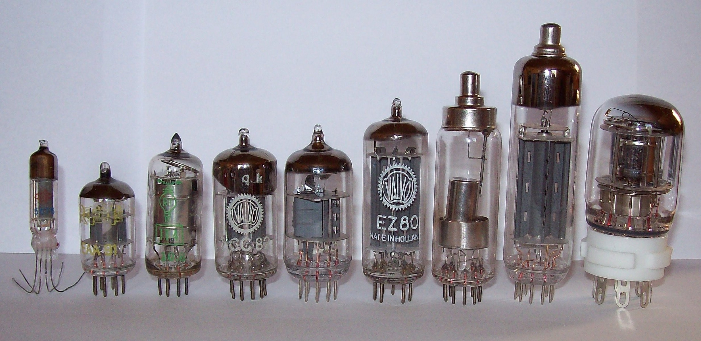

|
History of Computers |
|
 |
The Early Years |
The first counting device was the Abacus, originally from Asia. It worked on a place-value notion meaning that the place of a bead or rock on the apparatus determined how much it was worth |
 |
Napier's bones (1600s) |
Napier's bones are manually operated calculating device created by John Napier of Merchiston for calculation of products and quotients of numbers. |
 |
Pascaline (1642) |
Blaise Pascal invented the mechanical calculator called Pascaline. This calculating machine could add and subtract two numbers directly and multiply and divide by repetition. |
|
Difference Engine (1812) |
Charles P. Babbage, the "father of the computer", designed a machine, the difference engine which would be steam- powered, fully automatic and commanded by a fixed instruction program. |
 |
Ada Lovelace
(1840s)
Analytical Engine |
Ada Lovelace, is the world’s first computer programmer, provided the first algorithm intended to be processed by Charles Babbage's early mechanical general-purpose computer, the Analytical Engine. She suggested that a binary system should be used for storage rather than a decimal system. |
|
Boolean logic (1850s) |
George Boole developed Boolean logic which would later be used in the design of computer circuitry. |
 |
Hollerith’s Tabulator (1890s) |
Dr. Herman Hollerith introduced the first electromechanical, punched-card data-processing machine which was used to compile information for the 1890 U.S. census. Hollerith's tabulator became so successful that he started his own business to market it. His company would eventually become International Business Machines (IBM). |
|  |
Vacuum Tube (1906) |
The vacuum tube is invented by American physicist Lee De Forest. Was the first widely used electronic device which could amplify. |
|
Turing Machine (1943) |
British mathematician Alan Turing developed a hypothetical device, the Turing machine which would be designed to perform logical operation and could read and write. |
 |
Harvard Mark I |
Howard Aiken, in collaboration with engineers from IBM, constructed a large automatic digital sequence-controlled computer. This computer could handle all four arithmetic operations and had special built-in programs for logarithms and trigonometric functions. |
 |
ENIAC |
The giant ENIAC (Electrical Numerical Integrator and Calculator) machine was developed by John W. Muchly and J. Presper Eckert, Jr. at the University of 12 Pennsylvania. It used 18, 000 vacuums, punch-card input, weighed thirty tons and occupied a thirty-by-fifty-foot space. |